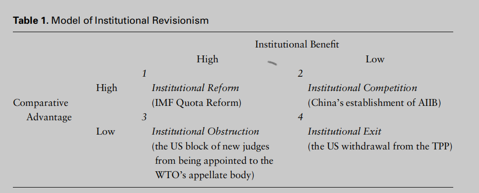

收录于合集 #理论研究 96个

作品简介
作者： 贺凯，澳洲格里菲斯大学（Griffith University）亚洲研究所教授、南开大学周恩来政府管理学院讲座教授；冯惠云，澳大利亚格里菲斯大学亚洲研究院副教授；陈思德（Steve CHAN） ，科罗拉多大学博尔德分校 (the University of Colorado Boulder）教授；胡伟星，澳门大学社会科学院院长。
编译： 戎秦婴（国政学人编译员，辽宁大学国际政治专业）
来源： Kai He，Huiyun Feng，Steve Chan，Weixing Hu，“Rethinking Revisionism in World Politics”， The Chinese Journal of International Politics ，Volume 14, Issue 2, Summer 2021, Pages 159–186,
归档： 《国际关系前沿》2021年第8期，总第35期
内容提要
修正主义是国际关系话语中的一个重要概念，在如今有关中美关系的讨论中尤为盛行，但直到最近学界才开始系统性地研究这一概念。本文对修正主义概念重新界定，认为在当今世界一国采用军事征服和颠覆方式的修正主义策略已不太可能，即所谓的“硬”修正主义（hard revisionism）;相反应关注旨在推动制度变革的“软”修正主义（soft revisionism），本文提出四种“软”修正主义策略类型，并以近年来中美关系实例进行阐明。
文章导读
美国先后在2017年《国家安全战略》（US National Security Strategy）及2019年《印太地区战略报告》（Indo-Pacific Strategy Report）中称中国为修正主义大国，挑战美国的权力、影响力和利益，并对其他国家进行经济掠夺。但事实上中国在多个国际场合承诺捍卫现有国际秩序并公开支持世贸组织和世界卫生组织等多边机构。相反，近年来美国却表现得像一个修正主义大国，挑战现有国际规范和制度，退出众多多边协议。
为什么崛起国中国虽然常被指为修正主义，但实际上仍在支持现有多边机构和条约，而理应维护现状的霸权国美国却时常反对或退出现有多边机构和条约，甚至违背国际关系基本准则？从该问题出发，本文重新审视了什么是世界政治中的修正主义，什么是修正主义策略，以及各国应如何运用不同的策略来改变现有国际秩序。
实践证明，在当今世界国家依靠军事力量进行征服和侵略的成本越来越高，而收益却在降低，即“硬”修正主义的有效性和使用次数都在降低。故本文主要关注“软”修正主义策略，引入“制度修正主义模型（institutional revisionism model）”以展示被观察行为体间的相互作用，进而提出国家在追求“软”修正主义策略时，形成对制度的改革（institutional reform）、阻碍（institutional obstruction）、退出（institutional exit）和竞争（institutional competition）四种倾向。同时，本文认为修正主义不仅会在新兴大国出现，任何对现状不满的国家包括霸权国都可能转向修正主义。
01
重新认识修正主义
修正主义在国际关系研究中是一个常见但始终定义不清的概念，原因有以下三点：首先在定义修正主义时存在强烈的“崛起国偏见”（rising-power bias），将修正主义行为与崛起国相联系，认为崛起国始终是国际秩序的破坏者；第二，一些学者将道德维度引入定义中，常将西方国家与道德和进步相联系，而其他国家则相反；最后，将国家的意图和行为混为一谈。
本文将修正主义定义为， 一国改变现有国际关系的规范性基础（normative foundations）以及政府间组织和协定的意图与实际行为。 修正主义根源于实现变革的能力和意愿，一国是否为修正主义国家应该以该国是否存在实际的侵略或破坏基本准则的行为，而非其权势增长来判断。
另有以下四点值得注意：首先，关于国际秩序的构成要素问题总是不断变化并存在争议的；其次，各国在引入哪些新规范、原则和如何改进现有制度方面存在巨大差异，而国际秩序建立在各国共同理解、相互支持和自愿遵守的基础上；再次，修正主义指的是一国的相关行为，而不是行为导致的结果，因为并非所有修正主义行为都会产生预期效果；最后，国家追求利益最大化，即使是霸权国也会为追求更大利益或防止本国实力相对衰落而改变现有规则。
其次进一步关注“软”修正主义，国家可以通过非军事策略来改变国际协定、机构和制度。如金砖国家在2014年成立了新开发银行（New Development Bank），新兴经济体国家贷款时可绕过世界银行和国际货币基金组织。新开发银行的出现体现了金砖国家采取的“软”修正主义策略，通过建立新国际机构，挑战原有的布雷顿森林体系中的国际机构和背后的国际规范——新自由主义原则。
02
软”修正主义策略：制度是关键
“软”修正主义概念借鉴了软制衡（soft balancing）概念，即次要国家（secondary states）可以使用非军事手段破坏霸权国权力的合法性，降低其在单极体系中的效力。但软制衡的范畴过于宽泛，无法描述修正主义国家的具体策略。
对此先后有学者进行进一步研究，如基于网络理论来检验制度设计如何塑造修正主义者的行为和策略；崛起国对现有全球治理体系的三种策略，搭便车（free ride）或被动接受（accept）现状、阻碍（hold up）或改变（change）现有制度中的某些规则和积极参与现有国际制度并试图建立新制度（Kastner, Pearson, Rector）；借鉴社会认同理论（social identity theory）中的社会流动、社会竞争和社会创造三种选择（Larson, Shevchenko）。
基于现有研究，本文进而提出了修正主义国家可能采取的以影响现有制度的四种策略： 制度改革、制度阻碍、制度退出和制度竞争。
制度改革为最常见的“软”修正主义方式，成本较低而收益较高，目标在于修改现有制度安排的规则、程序、领导和议程，以使其更好的满足修正主义国家利益和价值观。如新兴经济体国家寻求在国际货币基金组织投票权修订中增加自身配额。
制度阻碍指一国可以在现有制度内部挑战该制度，通过不合作行为来表达不满。如美国对联合国下属机构扣缴会费，阻止新法官上任世贸组织的上诉机构，导致相关机构出现失效、衰弱乃至崩溃。
制度退出是对现有制度的外部挑战行为，该策略往往具有双重目的。首先，反映出对现有制度合法性的蓄意破坏，是进行进一步破坏性行为的前兆。其次，退出现有制度的国家会获得更大的行动自由。退出行为在崛起国和霸权国均会出现，如日本退出国际联盟以及近期美国退出跨太平洋伙伴关系协定（TPP）和伊核协议。
制度竞争指国家创立新制度，直接与现有制度进行竞争，破坏现有制度的合法性，甚至挑战现有制度的存在并试图将其取代。如联合国对国联的取代，布雷顿森林体系对英国领导的全球金融治理体系的取代。
对于这四种选择有三点值得注意：一个国家可以对不同机构采取不同战略，如美国对待北约和亚太经合组织的策略是不同的；任何国家都可以采取这四种策略，无论是霸权国还是崛起国，只要这个国家对现有制度不满并有能力对它产生影响；各国也可以在不同问题领域采取不同策略，在实际中这四种策略并不是相互排斥的。
03
制度修正主义模型：比较优势与制度收益
本文借鉴了国际关系领域中理性主义的制度研究，以及比较政治学中的“渐进性制度变迁理论（theory of gradual institutional change）”，从而提出制度修正主义模型来解释国家对不同策略选择的变化。
本文对制度变迁相关的成本与收益进行了概念化，认为政治制度特征（characteristics of political institution）和政治背景特征（characteristics of political context）是促使不同类型的制度变迁形成的两个关键因素。另外国家修改现有制度的能力主要来源于其在某一问题领域的比较优势（comparative advantage）。因此，在解释制度变迁的各种策略时，我们使用国家在特定制度领域的“比较优势”来操作（operationalize）“政治背景”变量。用“否决可能性”（veto possibilities）来表示“政治背景”，如果存在着能够通过制度性或非制度性手段阻止变革的行动者，则变革就很可能被否决。如美国拥有否决权来抵制或限制发展中经济体要求的IMF份额改革，可见美国在全球金融治理中具有比较优势。当一个国家的比较优势越大，就越可能选择制度退出和制度竞争。总之，比较优势和制度收益的相互作用将决定一个国家对不同制度策略的选择。

第一种情况是拥有较高比较优势和制度收益的国家，但当该国认为其应得的利益与其实际得到的存在较大差异，仍可能采取修正主义行为，在这种情况下倾向选择制度改革策略，在机构内部表达自己的不满。如美国对北约和亚洲盟友施加“分担负担（burden sharing）”的压力；或中国努力增加在世界货币基金组织中的投票权。
第二，当一国在某一问题领域具有较高比较优势，但制度收益较少时，倾向于采取制度竞争策略，可以在新制度中获得主导地位，如中国于2015年成立亚投行（AIIB），体现了中国改变现有金融制度秩序的策略；美国在东盟地区论坛（ARF）中的制度收益较少，则转而支持香格里拉对话（SLD），这一转变是美国为挑战现有东盟地区论坛而选择的制度竞争策略的表现。
第三，当一国在现有制度中获得高收益，但比较优势较低时，则倾向选择制度阻碍策略。即使对机构中的某方面感到不满，但较高收益使其不愿退出该机构，而较低比较优势限制其挑战行为阻碍机构发展运作。如美国近年来阻挠国际货币基金组织配额和治理方式改革，以应对新兴经济体带来的压力。
第四，一国在当前机构中获得的收益和在相关问题领域中比较优势都低的情况下，会倾向选择弃权或不合作，即制度退出策略。如特朗普领导下的美国频繁使用该策略，退出TPP、巴黎气候协定及伊核协定等。值得注意的是美国的退出策略可能会增强其进行重新谈判或是修订规则的影响力。如特朗普曾威胁退出北美自由贸易协定（NAFTA），迫使加墨两国在后续谈判中妥协以满足美国要求。但该行为对于崛起国并不适用，因为崛起国仍处在与现有制度互动中，且退出策略会损害声誉和影响力。
综上，本文的模型相对之前研究实现三点创新。首先任何国家都可以对现有制度感到不满，进一步根据比较优势和制度收益选择不同策略。模型解释了国家不断变化的制度策略，也包括了国家在现有制度内外部的行为。
其次，模型包含并简化了现有文献结论，如软制衡和Goddard提出的制度策略分类，且不再关注“硬”修正主义，而将重点放在制度修正主义上。
最后，形成修正主义策略的制度内部和外部因素均被纳入模型构建构成中，即在制度内部获得的制度收益和在外部的比较优势（相对竞争对手的能力）。
04
结论
本文引入了修正主义新概念，解决了“崛起国偏见”问题，关注国家实际行为而不是假定意图。最终我们认为在当今全球化时代，国家更可能选择“软”修正主义策略来影响改变现有制度秩序，但并不否认以军事为基础的“硬”修正主义仍然存在。总之，在“软”修正主义的驱使下，未来国际秩序的变迁将会更加和平。
译者评述
本文从“修正主义”定义出发，对现有修正主义研究成果批判吸收，并以实际修正主义国家的外交政策和演变为例，提出了四种具体策略和“制度修正主义模型”。作者认为当今世界以军事力量为基础的“硬”修正主义已不太可能，而旨在推动制度变革的“软”修正主义更具研究意义。与传统修正主义的“崛起国偏见”相反，本文提出任何国家对现有议题、机构和制度中某方面存在不满时，均有可能成为修正主义国家。
首先，本文着重阐述修正主义具体内涵和一些测量标准，打破了对某些国家的刻板印象。澄清理论概念，以防止在该概念基础上的进一步研究迷失方向。其次，实现实然与应然的结合，本文不仅关注历史中修正主义国家的外交政策及其演变，同时还以制度收益和比较优势为基础建构模型，指出当国家在某一问题领域的制度收益和比较优势达到某一程度时，就会出现相应的制度选择，对于预测和设计大国战略及外交政策具有启发意义。最后，本文在一些具体衡量标准方面仍存在不足。如文中指出国家的意图和实际行为是不能混为一谈的，但在愈加复杂的国际政治中“行为- 意图- 属性”的推理变得不再可靠，那么如何正确判断他国意图以避免“错误知觉”？另外对于本文提出的模型，该如何具体衡量收益和比较优势以及两者间关系的变化从而相应的制度策略选择，对于这点能否提出量化或其他衡量指标。
总之，修正主义行为本质仍是国家对权力的争夺，是在国际社会和国际制度框架中的国家间政治关系的体现。任何国家都可能成为修正主义国家，这取决于国家对现有国际资源分配规则的态度，取决于修正主义策略的成本收益分析。自威斯特伐利亚体系建立以来，国际秩序就处在不断改良和进步中，应克服对修正主义的“崛起国偏见”，如果一国的修正主义行为能够促进现有国际体系发展，那么这种修正就应是有益的。
参考文献
[1]Kai He, Huiyun Feng, Steve Chan, and Weixing Hu.RethinkingRevisionism in World Politics. The Chinese Journal of International Politics , 2021, 159–186.
[2]温尧：《理解中国崛起：走出“修正-现状”二分法的迷思》，载《外交评论》2017年第5期
[3]宋伟：《国际关系中的修正主义》，载《教学与研究》2021年第3期
词汇整理
修正主义 Revisionism
高压政治 coercionc
理性主义者 Rationalist
2008全球金融危机 2008 Global Financial Crisis（GFC）
东盟地区论坛 ASEAN Regional Forum（ARF）
香格里拉对话 Shangri-La Dialogue（SLD）
责编 | 徐一凡 姚寰宇
排版 | 胡蝶 方引弓
文章观点不代表本平台观点，本平台评译分享的文章均出于专业学习之用, 不以任何盈利为目的，内容主要呈现对原文的介绍，原文内容请通过各高校购买的数据库自行下载。
好好学习，天天“在看”

国政学人
支持学术公益与知识传播
微信扫一扫赞赏作者 __赞赏
已喜欢，对作者说句悄悄话
取消 __
发送给作者
发送
最多40字，当前共字
上一页 1/3 下一页
长按二维码向我转账
支持学术公益与知识传播
受苹果公司新规定影响，微信 iOS 版的赞赏功能被关闭，可通过二维码转账支持公众号。